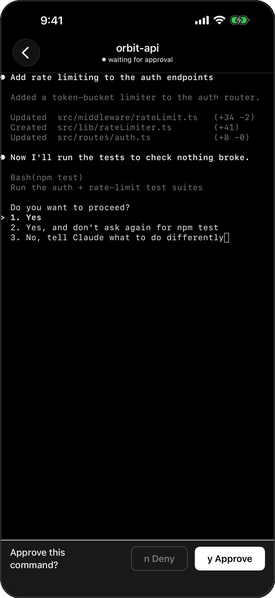

iPhone + iPad · iOS 17+
Your coding agents,
never left waiting.
Watch and steer the CLI coding agents running on your Mac — Claude Code and any terminal agent — from your iPhone, over your own private network.

The hero moment
An agent needs a decision. You’re not at your desk.
Coding agents pause to ask permission — Allow this command? y/n — and then wait. Code Connector pushes that moment straight to your phone. Approve or deny from the notification, then open the app to watch the live terminal, review the diff, and keep it moving.
Features
Six things it does, and does exactly.
Live terminal, in your pocket.
A real, full terminal — not a summary. Powered by a true terminal emulator over a tmux-backed PTY, so you see exactly what your agent is doing, scroll the history, and send input.

Approve from anywhere.
A push notification the moment an agent needs a decision. Approve or deny straight from the notification or the Lock Screen — a Live Activity keeps the current status glanceable while it runs.

Review the work.
A read-only file browser and syntax-highlighted diffs. See what changed — with native git status and diff rendering — before you approve, right on your phone.

Sessions that persist.
Built on tmux. Sessions survive disconnects, the app closing, and daemon restarts — reattach and pick up exactly where you left off. Waiting and finished status is persisted to disk, so a restart never silently clears it.

Works with any agent.
Not tied to one tool. Claude Code is wired automatically; any other CLI agent — Codex, Aider, a bare shell — is surfaced through a generic hook system and tagged by source.

Private by architecture.
Runs over your own Tailscale tailnet, WireGuard-encrypted. Traffic goes device-to-Mac only; nothing transits a Code Connector server, because there isn’t one. Every phone is paired with its own revokable token.

How it works
Three steps to connected.
Install the daemon
On your Mac, run the menu-bar app or npx code-connector. It needs Node ≥ 20 and Tailscale.
Scan the pairing QR
The Mac shows a pairing QR. Scan it with the iPhone app to mint this device’s revokable token.
Work from anywhere
Your sessions appear. Approve, watch, and review from anywhere on your tailnet.
Security
Private by architecture, not by policy.
There is no Code Connector cloud to trust. The app talks only to your own Mac, over your own network. Here is exactly how.
Your Mac does the work
The Mac keeps running your agents; the phone is a window into it. Nothing about your code, terminals, or notifications leaves your machines.
Your Tailscale tailnet
Traffic rides your own Tailscale (WireGuard) tunnel, device-to-Mac. That encrypted tunnel is the transport and the encryption layer — required by default, not merely recommended.
Revokable per-pairing tokens
Mint one bearer token per phone; revoke any one individually. The daemon hot-reloads the change in seconds — no restart or re-pairing of your other devices. Tokens live in the iOS Keychain.
Push, sent by your daemon
Notifications go directly from your Mac to Apple’s push service using your own APNs key — never routed through a third party. App Store “Data Not Collected” is accurate.
Own the daemon, the network, the data
Keep your agents moving.
Self-hosted and private, versus cloud remote-agent tools. Your own Mac, your own network, no middleman.